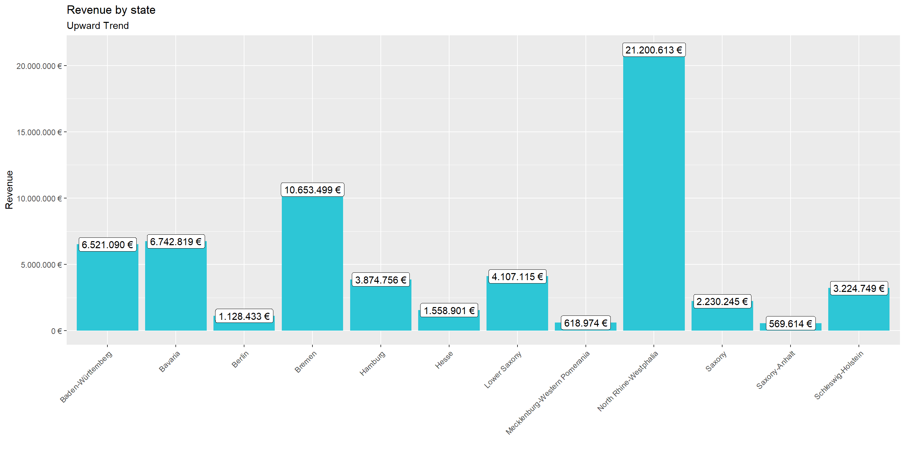
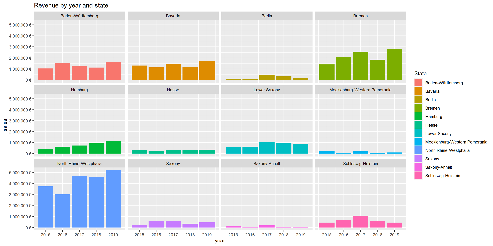

Last compiled: 2020-12-06
calc_EOQ <- function(D = 1000) {
K <- 5
h <- 0.25
Q <- sqrt(2*D*K/h)
Q
}
calc_EOQ()## [1] 200#importing packages
library(tidyverse)
library(readxl)
library(lubridate)
library("writexl")
#reading files
bikes_tbl <- read_excel(path = "DS_101/DS_101/00_data/01_bike_sales/01_raw_data/bikes.xlsx")
orderlines_tbl <- read_excel("DS_101/DS_101/00_data/01_bike_sales/01_raw_data/orderlines.xlsx")
bikeshops_tbl <- read_excel("DS_101/DS_101/00_data/01_bike_sales/01_raw_data/bikeshops.xlsx")
#joining the tabels
bike_orderlines_joined_tbl <- orderlines_tbl %>%
left_join(bikes_tbl, by = c("product.id" = "bike.id")) %>%
left_join(bikeshops_tbl, by = c("customer.id" = "bikeshop.id"))
glimpse(bike_orderlines_joined_tbl)## Rows: 15,644
## Columns: 19
## $ ...1 <chr> "1", "2", "3", "4", "5", "6", "7", "8", "9", "10",...
## $ order.id <dbl> 1, 1, 2, 2, 3, 3, 3, 3, 3, 4, 5, 5, 5, 5, 6, 6, 6,...
## $ order.line <dbl> 1, 2, 1, 2, 1, 2, 3, 4, 5, 1, 1, 2, 3, 4, 1, 2, 3,...
## $ order.date <dttm> 2015-01-07, 2015-01-07, 2015-01-10, 2015-01-10, 2...
## $ customer.id <dbl> 2, 2, 10, 10, 6, 6, 6, 6, 6, 22, 8, 8, 8, 8, 16, 1...
## $ product.id <dbl> 2681, 2411, 2629, 2137, 2367, 1973, 2422, 2655, 22...
## $ quantity <dbl> 1, 1, 1, 1, 1, 1, 1, 1, 1, 1, 1, 2, 1, 1, 1, 1, 1,...
## $ model <chr> "Spectral CF 7 WMN", "Ultimate CF SLX Disc 8.0 ETA...
## $ model.year <dbl> 2021, 2020, 2021, 2019, 2020, 2020, 2020, 2021, 20...
## $ frame.material <chr> "carbon", "carbon", "carbon", "carbon", "aluminium...
## $ weight <dbl> 13.80, 7.44, 14.06, 8.80, 11.50, 8.80, 8.20, 8.85,...
## $ price <dbl> 3119, 5359, 2729, 1749, 1219, 1359, 2529, 1559, 38...
## $ category <chr> "Mountain - Trail - Spectral", "Road - Race - Ulti...
## $ gender <chr> "female", "unisex", "unisex", "unisex", "unisex", ...
## $ url <chr> "https://www.canyon.com/en-de/mountain-bikes/trail...
## $ name <chr> "AlexandeRad", "AlexandeRad", "WITT-RAD", "WITT-RA...
## $ location <chr> "Hamburg, Hamburg", "Hamburg, Hamburg", "Bremen, B...
## $ lat <dbl> 53.57532, 53.57532, 53.07379, 53.07379, 48.78234, ...
## $ lng <dbl> 10.015340, 10.015340, 8.826754, 8.826754, 9.180819...# separating the location to state and city and calculating total price
bike_orderlines_wrangled_tbl <- bike_orderlines_joined_tbl %>%
separate(col = location,
into = c("city", "state"),
sep = ", ") %>%
mutate(total.price = price * quantity) %>%
select(-...1, -gender) %>%
select(-ends_with(".id")) %>%
bind_cols(bike_orderlines_joined_tbl %>% select(order.id)) %>%
select(order.id, contains("order"), contains("model"), contains("location"),
price, quantity, total.price,
everything()) %>%
set_names(names(.) %>% str_replace_all("\\.", "_"))
glimpse(bike_orderlines_wrangled_tbl)## Rows: 15,644
## Columns: 17
## $ order_id <dbl> 1, 1, 2, 2, 3, 3, 3, 3, 3, 4, 5, 5, 5, 5, 6, 6, 6,...
## $ order_line <dbl> 1, 2, 1, 2, 1, 2, 3, 4, 5, 1, 1, 2, 3, 4, 1, 2, 3,...
## $ order_date <dttm> 2015-01-07, 2015-01-07, 2015-01-10, 2015-01-10, 2...
## $ model <chr> "Spectral CF 7 WMN", "Ultimate CF SLX Disc 8.0 ETA...
## $ model_year <dbl> 2021, 2020, 2021, 2019, 2020, 2020, 2020, 2021, 20...
## $ price <dbl> 3119, 5359, 2729, 1749, 1219, 1359, 2529, 1559, 38...
## $ quantity <dbl> 1, 1, 1, 1, 1, 1, 1, 1, 1, 1, 1, 2, 1, 1, 1, 1, 1,...
## $ total_price <dbl> 3119, 5359, 2729, 1749, 1219, 1359, 2529, 1559, 38...
## $ frame_material <chr> "carbon", "carbon", "carbon", "carbon", "aluminium...
## $ weight <dbl> 13.80, 7.44, 14.06, 8.80, 11.50, 8.80, 8.20, 8.85,...
## $ category <chr> "Mountain - Trail - Spectral", "Road - Race - Ulti...
## $ url <chr> "https://www.canyon.com/en-de/mountain-bikes/trail...
## $ name <chr> "AlexandeRad", "AlexandeRad", "WITT-RAD", "WITT-RA...
## $ city <chr> "Hamburg", "Hamburg", "Bremen", "Bremen", "Stuttga...
## $ state <chr> "Hamburg", "Hamburg", "Bremen", "Bremen", "Baden-W...
## $ lat <dbl> 53.57532, 53.57532, 53.07379, 53.07379, 48.78234, ...
## $ lng <dbl> 10.015340, 10.015340, 8.826754, 8.826754, 9.180819...#sales by state - Bar plot
sales_by_state_tbl <- bike_orderlines_wrangled_tbl %>%
select(state, total_price) %>%
group_by(state) %>%
summarize(sales = sum(total_price)) %>%
mutate(sales_text = scales::dollar(sales, big.mark = ".",
decimal.mark = ",",
prefix = "",
suffix = " €"))
sales_by_state_tbl## # A tibble: 12 x 3
## state sales sales_text
## <chr> <dbl> <chr>
## 1 Baden-Württemberg 6521090 6.521.090 €
## 2 Bavaria 6742819 6.742.819 €
## 3 Berlin 1128433 1.128.433 €
## 4 Bremen 10653499 10.653.499 €
## 5 Hamburg 3874756 3.874.756 €
## 6 Hesse 1558901 1.558.901 €
## 7 Lower Saxony 4107115 4.107.115 €
## 8 Mecklenburg-Western Pomerania 618974 618.974 €
## 9 North Rhine-Westphalia 21200613 21.200.613 €
## 10 Saxony 2230245 2.230.245 €
## 11 Saxony-Anhalt 569614 569.614 €
## 12 Schleswig-Holstein 3224749 3.224.749 €# Step 2 - Visualize
sales_by_state_tbl %>%
ggplot(aes(x = state, y = sales)) +
geom_col(fill = "#2DC6D6") + # Use geom_col for a bar plot
geom_label(aes(label = sales_text)) + # Adding labels to the bars
geom_smooth(method = "lm", se = FALSE) + # Adding a trendline
scale_y_continuous(labels = scales::dollar_format(big.mark = ".",
decimal.mark = ",",
prefix = "",
suffix = " €")) +
labs(
title = "Revenue by state",
subtitle = "Upward Trend",
x = "", # Override defaults for x and y
y = "Revenue"
)+ theme(axis.text.x = element_text(angle = 45, hjust = 1))
# sales by year and location - 12 plots
sales_by_year_state_tbl <- bike_orderlines_wrangled_tbl %>%
# Select columns and add a year
select(order_date, total_price, state) %>%
mutate(year = year(order_date)) %>%
# Group by and summarize year and main catgegory
group_by(year, state) %>%
summarise(sales = sum(total_price)) %>%
ungroup() %>%
# Format $ Text
mutate(sales_text = scales::dollar(sales, big.mark = ".",
decimal.mark = ",",
prefix = "",
suffix = " €"))
sales_by_year_state_tbl ## # A tibble: 60 x 4
## year state sales sales_text
## <dbl> <chr> <dbl> <chr>
## 1 2015 Baden-Württemberg 1031924 1.031.924 €
## 2 2015 Bavaria 1301461 1.301.461 €
## 3 2015 Berlin 95853 95.853 €
## 4 2015 Bremen 1395912 1.395.912 €
## 5 2015 Hamburg 423090 423.090 €
## 6 2015 Hesse 308609 308.609 €
## 7 2015 Lower Saxony 584386 584.386 €
## 8 2015 Mecklenburg-Western Pomerania 222003 222.003 €
## 9 2015 North Rhine-Westphalia 3735092 3.735.092 €
## 10 2015 Saxony 238371 238.371 €
## # ... with 50 more rows# Step 2 - Visualize
sales_by_year_state_tbl %>%
# Set up x, y, fill
ggplot(aes(x = year, y = sales, fill = state)) +
# Geometries
geom_col() + # Run up to here to get a stacked bar plot
# Facet
facet_wrap(~ state) +
# Formatting
scale_y_continuous(labels = scales::dollar_format(big.mark = ".",
decimal.mark = ",",
prefix = "",
suffix = " €")) +
labs(
title = "Revenue by year and state",
fill = "State" # Changes the legend name
)
This API returns times to us in the form of Unix time.
library(glue)
library(httr)
library(jsonlite)
resp <- GET("http://api.open-notify.org/iss-pass.json", query = list(lat =53.5511, lon = 9.9937))
resp## Response [http://api.open-notify.org/iss-pass.json?lat=53.5511&lon=9.9937]
## Date: 2020-11-27 11:58
## Status: 200
## Content-Type: application/json
## Size: 522 B
## {
## "message": "success",
## "request": {
## "altitude": 100,
## "datetime": 1606477981,
## "latitude": 53.5511,
## "longitude": 9.9937,
## "passes": 5
## },
## "response": [
## ...data = fromJSON(rawToChar(resp$content))
data## $message
## [1] "success"
##
## $request
## $request$altitude
## [1] 100
##
## $request$datetime
## [1] 1606477981
##
## $request$latitude
## [1] 53.5511
##
## $request$longitude
## [1] 9.9937
##
## $request$passes
## [1] 5
##
##
## $response
## duration risetime
## 1 540 1606488402
## 2 638 1606494121
## 3 652 1606499908
## 4 641 1606505709
## 5 556 1606511522library(tidyverse) # Main Package - Loads dplyr, purrr, etc.
library(rvest) # HTML Hacking & Web Scraping
library(xopen) # Quickly opening URLs
library(jsonlite) # converts JSON files to R objects
library(glue) # concatenate strings
library(stringi) # character string/text processing
url_home <- "https://www.rosebikes.com/"
#xopen(url_home) # Open links directly from RStudio to inspect them
# Read in the HTML for the entire webpage
html_home <- read_html(url_home)
bike_family_tbl <- html_home %>%
# Get the nodes for the families ...
html_nodes(css=".main-navigation-category-with-tiles__title ")%>%
# ...and extract the information of the id attribute
html_text()%>%
discard(.p = ~stringr::str_detect(.x,"Kids|Sale")) %>%
enframe(name = "position", value = "family_class") %>%
# Add a hashtag so we can get nodes of the categories by id (#)
mutate(
family_id = str_glue("#{family_class}")
)
bike_family_tbl## # A tibble: 9 x 3
## position family_class family_id
## <int> <chr> <glue>
## 1 1 "\nBikes\n" "#\nBikes\n"
## 2 2 "\nMTB\n" "#\nMTB\n"
## 3 3 "\nRoad\n" "#\nRoad\n"
## 4 4 "\nGravel\n" "#\nGravel\n"
## 5 5 "\nCyclocross\n" "#\nCyclocross\n"
## 6 6 "\nFitness\n" "#\nFitness\n"
## 7 7 "\nHybrid\n" "#\nHybrid\n"
## 8 8 "\nTouring\n" "#\nTouring\n"
## 9 9 "\nUrban\n" "#\nUrban\n"family_id_css <- bike_family_tbl %>%
pull(family_class) %>%
stringr::str_c(collapse = ", ")
family_id_css## [1] "\nBikes\n, \nMTB\n, \nRoad\n, \nGravel\n, \nCyclocross\n, \nFitness\n, \nHybrid\n, \nTouring\n, \nUrban\n"# Extract the urls from the href attribute
bike_categories_tbl <- html_home %>%
# Select nodes by the ids
# html_nodes(css = (family_id_css) )%>%
# Going further down the tree and select nodes by class
# Selecting two classes makes it specific enough
html_nodes( css=".catalog-category-title-with-video__title , .catalog-breadcrumb__list-item-link span , .catalog-navigation__link ") %>%
html_attr("href")
# Convert vector to tibble
#enframe(name = "position", value = "subdirectory") %>%
# Add the domain, because we will get only the subdirectories
#mutate(url =glue("https://www.rosebikes.com{subdirectory}"))%>%
# Some categories are listed multiple times.
# We only need unique values
# distinct(url)
bike_categories_tbl## character(0)# Tidyverse
library(tidyverse)
library(vroom)
# Data Table
library(data.table)